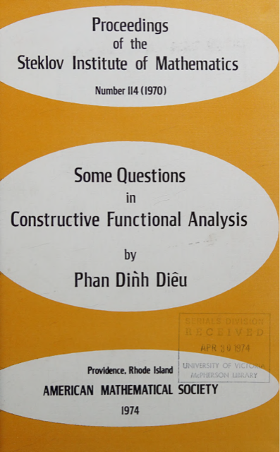

From Constructive Mathematics to the Foundations of Computing in Vietnam
Phan Đình Diệu (1936–2018) was among the pioneers who brought modern applied mathematics and computing to Vietnam. At Lomonosov Moscow State University and the Steklov Institute of Mathematics, he worked in the circle of Andrei A. Markov Jr., the founder of the Russian school of constructive mathematics, earning his doctorate and, later, the higher Doctor of Science degree. His early papers, on constructive functional analysis and topology, appeared in Doklady Akademii Nauk and the Proceedings of the Steklov Institute, and were translated into English by the American Mathematical Society.
Returning to Hanoi, he devoted his scientific career to developing computer science in Vietnam. He established it as an academic field, founded and led the country's first research institute for computing, trained its early generations of specialists, and, in particular, drafted the national programs that would build Vietnam's information-technology infrastructure, from the first computing centres to preparation for connecting the country to the Internet.
Constructive mathematics & logic Moscow, 1965–1974
His foundational work asked what parts of analysis and topology survive when every object must be explicitly constructed by an algorithm, a question at the heart of Markov's constructive mathematics, and a natural bridge to the theory of computation that would define his later career.

Some Questions in Constructive Functional Analysis
Proceedings of the Steklov Institute of Mathematics, No. 114 (1970). American Mathematical Society, Providence, Rhode Island, 1974. 228 pp.
The doctoral research he carried out at the Steklov Institute, gathered into a single monograph and translated cover-to-cover by the American Mathematical Society: a young Vietnamese mathematician's name on the spine of one of the world's most respected mathematical series.
View the book record on Google Books →The underlying original papers appeared in the Soviet journals:
- Constructive locally convex linear topological spaces Russian original
- The metrizability, normability and multinormability of constructive locally convex spaces Russian original
- On conjugates to constructive locally convex spaces Russian original
- Constructive generalized functions Russian original
- Certain properties of constructive generalized functions Russian original
- A language of constructive mathematics involving systems of sets Russian original
- On closed and open sets in constructive topological spaces Russian original
- On spaces of constructive infinitely differentiable functions and on functionals on them Russian original
Automata, languages & complexity 1971–1986
Back in Hanoi, he turned to the theory of computation (probabilistic automata, formal languages, and the average-case complexity of hard problems), laying the intellectual groundwork for computer science as an academic field in Vietnam. He also wrote the country's early textbooks on computational complexity and cryptography.
- Asymptotical estimation of some characteristics of finite graphs Numdam - open access
- Criteria of representability of languages in probabilistic automata journal archive
- Finite probabilistic automata journal archive
- Average polynomial time complexity of some NP-complete problems journal archive
Building a National Program on IT 1976–1997
Phan Đình Diệu was the first director of the Institute of Computer Science and Cybernetics (today the Institute of Information Technology of the Vietnam Academy of Science and Technology), founding chairman of the Vietnam Informatics Association, and a deputy head of the steering committee for the National IT Program, Phase I (1993–1997).
The blueprint, and the word that was left out
Diệu drafted, by hand, Vietnam's National IT Program to the year 2000. Nearly every point of the official plan signed by Prime Minister Võ Văn Kiệt in 1995 was taken, almost verbatim, from his manuscript.
One point, however, did not make it in. On pages 12–13 of the handwritten draft, he argued for the necessity of connecting Vietnam to the Internet, in the early 1990s still too new and too sensitive an idea to accept. Vietnam would only go online in 1997. He had made the case for it quietly, years before the country was ready to listen.
Read the handwritten draft - facsimile & translation → The signed official plan - bilingual →
Original scans: the author's handwritten draft (45 pp, PDF) · the signed official plan (PDF)
- Vietnam's IT-2000 Program: The Challenges Ahead AIS eLibrary - open access
- Vietnam: Information Technology for the Transition IEEE Xplore · doi:10.1109/2.485897
“Management is an art. But today, management is no longer art alone; it is also science and technology.”
The full scientific archive (dozens of papers in Russian, English and Vietnamese, plus his books on computational complexity and cryptography) is available on the Vietnamese “Science & Education” pages.
← Back to home